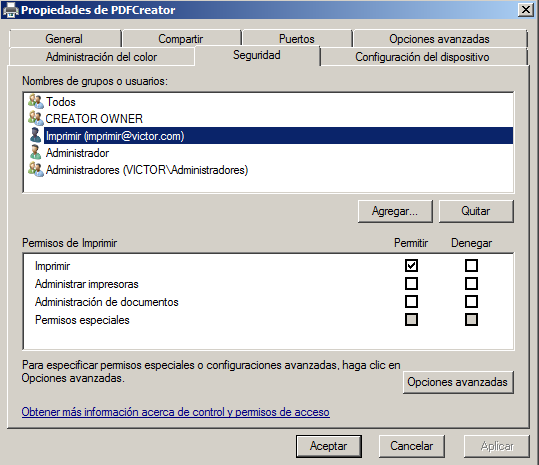

- Módulo: Administración de Sistemas Operativos
- Título del trabajo A1: Instalación en Windows
- Alumno: Victor Garcia
- Curso Académico: 2014/2015
Instalamos el software gratuito PDFCreator, este programa nos crea una impresora virtual en nuestro equipo, que es capaz de imprimir los documentos en PDF
Compartimos la impresora en nuestro servidor
Habilitamos Active Directory en el servidor.
Habilitamos en el servidor la función o rol de servidor de impresión, también nos hará falta la función o rol de IIS
Entramos a la impresora a través del navegador web
Pausamos la impresora para que nos muestre los documentos que se van a imprimir antes de que lo hagan.
Una vez le quitamos la pausa ya nos muestra la pantalla de guardado del archivo.
Nos vamos al cliente y entramos a traves del navegador para comprobar que funciona.
Añadimos la impresora impresora en nuestro cliente
Le damos permiso al usuario que usa el cliente para imprimir y hacemos una prueba

Servidor de impresion en Windows